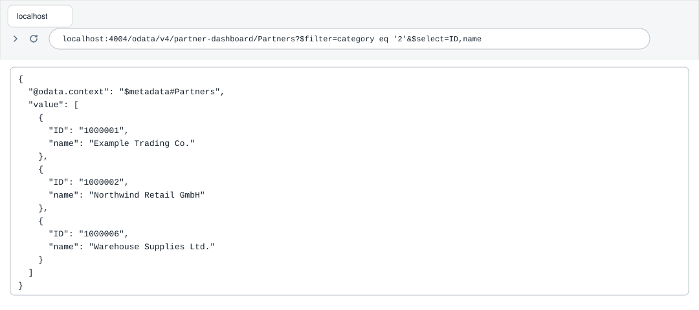
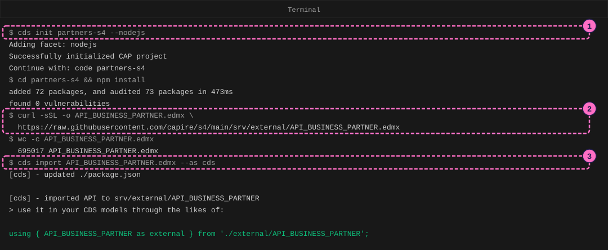
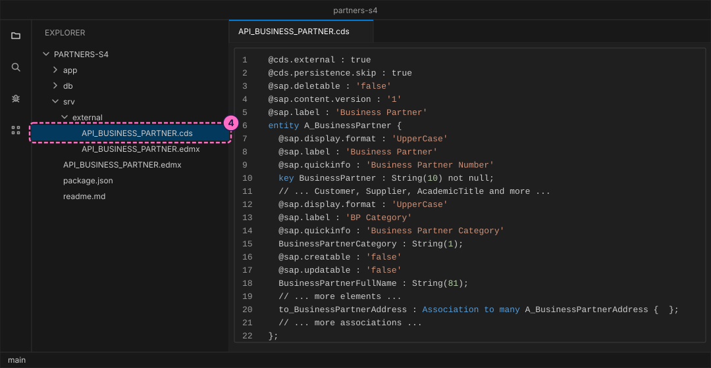
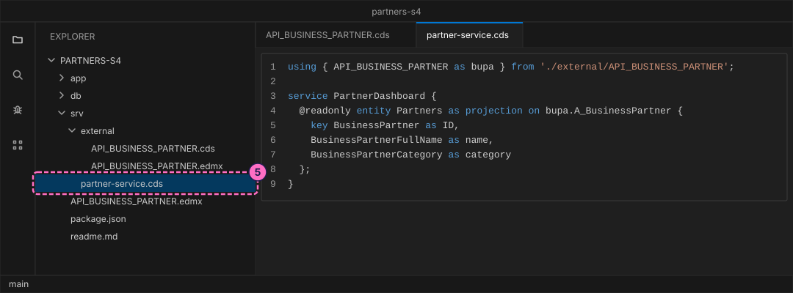
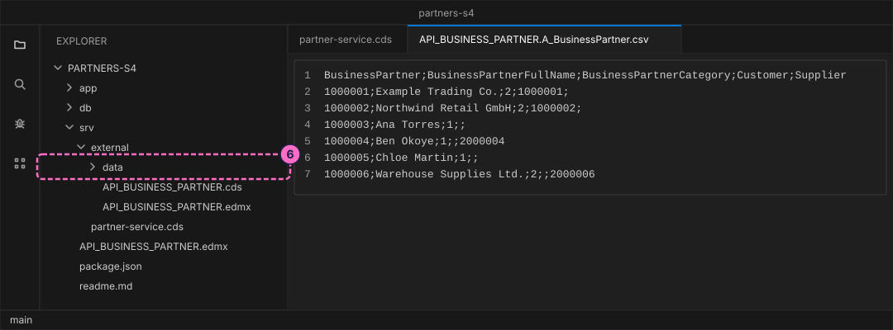
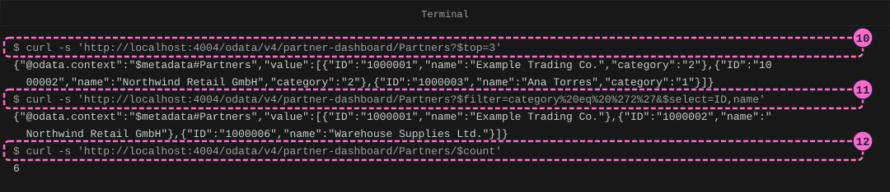
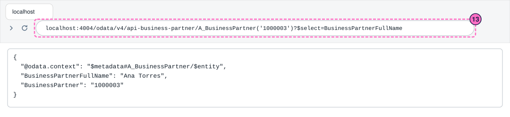

SAP Guide: Consume an SAP API Specification in CAP
|
This content was generated with the assistance of AI and should be verified against the official documentation before being relied on in production. |
Checked on 2026-11-13 against CAP Node.js 10.2 (@sap/cds 10.2.2, @sap/cds-dk 10.2.1) and Node.js 24.21.
What you build
This is a teaching model built with CAP. It is not SAP S/4HANA or SAP SuccessFactors and does not reproduce their screens.
You build a small partner dashboard that gets its business partners from an SAP API. You do not have an SAP system, so you do the next best thing: you take the real description of the SAP Business Partner API (API_BUSINESS_PARTNER), let CAP turn it into a service definition, and let CAP pretend to be that API from a small CSV file of made-up partners. Your own service, PartnerDashboard, offers a short view of the partners, Partners, with three fields, and forwards every read to the API. The code that you write would not change if the API were a real SAP S/4HANA system; only the place that CAP sends the request to would.

Before you start
-
No account is needed. The CAP tools install from the public npm registry without signing in, and the API description comes from a public GitHub repository without signing in. The SAP Business Accelerator Hub, where SAP publishes these descriptions, asks for a sign-in before a download, so this guide does not use it. Installing
@sap/cds-dkand@sap/cdsmeans accepting the SAP Developer License Agreement, version 3.2, which the packages state themselves. -
The API description is the file
API_BUSINESS_PARTNER.edmxof the repository capire/s4, which the CAP team publishes under the Apache License 2.0 (license text). Its readme calls the repository a sample that is not meant for production use. The file is 695 KB and is not part of this site’s lab: you download it in step 2. -
Install Node.js 22.12 or newer and the tools of SAP Guide: Your First CAP Service (
npm install --global @sap/cds-dk, thencds version). Use a code editor such as Visual Studio Code, and a terminal. A browser shows one of the results. You needcurl, which current versions of Windows, macOS and Linux include. -
Read Consuming SAP APIs from CAP first, or at least know what a remote service is. This guide runs the local part of that page step by step. Where the page goes on to a real system with a destination, this guide stops, because that needs an SAP BTP account.
-
The names
API_BUSINESS_PARTNER,A_BusinessPartner,BusinessPartner,BusinessPartnerFullNameandBusinessPartnerCategoryare SAP’s: they are in the downloaded file, and Master Data and the Business Partner describes what the API offers. The namesPartnerDashboard,Partners,ID,nameandcategoryare the model’s own. The six partners, their IDs and their categories are made up. -
The figures are drawings of the terminal, the editor and the browser, not screenshots. A highlighted box with a number marks the command, the file or the address of the step with the same number.
Steps
Get the API definition and import it
-
Create the project and install its dependencies. The option
--nodejschooses the JavaScript runtime of CAP.cds init partners-s4 --nodejs cd partners-s4 npm install -
Download the API description into the project folder. Use the address of the raw file, not the address of the GitHub page that shows it (see the table at the end). The option
-Lfollows redirects,-sShides the progress meter and still prints errors, and-onames the file that is written.curl -sSL -o API_BUSINESS_PARTNER.edmx \ https://raw.githubusercontent.com/capire/s4/main/srv/external/API_BUSINESS_PARTNER.edmx wc -c API_BUSINESS_PARTNER.edmxThe file was 695017 bytes and had the SHA-256 checksum
810008e1ac47b2ba3c5412178285f608a9017ee26ca42e7ea839efc19b4faf77when this guide was checked (shasum -a 256 API_BUSINESS_PARTNER.edmxprints it). The repository may change the file later; a different size is not an error as long as the next step works. EDMX is the XML format in which an OData V2 service describes its entities, properties and associations. The file is data:cds importreads it and nothing runs it. -
Import it. The command copies the file into
srv/external, converts it to CDS, and adds an entry for the service topackage.json. The option--as cdswrites the converted model as readable CDS text; without it the model is written as a.csnfile, which is the same model as JSON.cds import API_BUSINESS_PARTNER.edmx --as cdsThe answer names the CDS line that you will use in step 5. The command also changed
package.json: it added a block that tells CAP that a service namedAPI_BUSINESS_PARTNERexists, that it is an OData V2 service, and where its model is."cds": { "requires": { "API_BUSINESS_PARTNER": { "kind": "odata-v2", "model": "srv/external/API_BUSINESS_PARTNER" } } }The import also added three SAP Cloud SDK packages to the
dependenciesofpackage.json. They are what CAP uses to call a real system. The mocked service of this guide does not use them, so you do not need to install them here.
-
Open
srv/external/API_BUSINESS_PARTNER.cdsand findentity A_BusinessPartner. This is the business partner of the SAP API. Every element of the real API is listed, with SAP’s labels as@sap.labelannotations. The two annotations at the top matter most:@cds.external : truesays that the entity belongs to a service somewhere else, and@cds.persistence.skip : truesays that CAP must not create a database table for it. The key isBusinessPartner;BusinessPartnerCategoryholds the category of the partner (the sample data of step 6 uses1for a person and2for an organization); the associations at the end, such asto_BusinessPartnerAddress, lead to the addresses and other related data. CAP marks each association of an imported service with an empty key list,{ }, because the file does not say how to look up the related rows.
The figure shows an excerpt: the real entity has many more elements and associations, and the line numbers of the figure count the excerpt, not the file.
Describe your own view and add sample data
-
Create the file
srv/partner-service.cds. The first line imports the imported service under the short namebupa, with the line that step 3 printed. The servicePartnerDashboardthen offers one entity,Partners, as a projection onA_BusinessPartner: it keeps three elements and gives them your own names. Your code stays independent of the long SAP names, and a request asks the remote service only for what it needs.@readonlymakes the entity read-only.using { API_BUSINESS_PARTNER as bupa } from './external/API_BUSINESS_PARTNER'; service PartnerDashboard { @readonly entity Partners as projection on bupa.A_BusinessPartner { key BusinessPartner as ID, BusinessPartnerFullName as name, BusinessPartnerCategory as category }; }Source: Consuming Services (archived CAP guide) (section Model Projections) and CAP-Level Service Integration

-
Give the mocked API something to answer with. Create the folder
srv/external/dataand in it the fileAPI_BUSINESS_PARTNER.A_BusinessPartner.csv. The name is the service, a dot and the entity, and CAP loads every such file into the mock’s table when it starts. The first row holds the SAP element names, the fields are separated by semicolons here, and an empty field stays empty. Customers have a number inCustomer, suppliers one inSupplier; the six rows are made up.BusinessPartner;BusinessPartnerFullName;BusinessPartnerCategory;Customer;Supplier 1000001;Example Trading Co.;2;1000001; 1000002;Northwind Retail GmbH;2;1000002; 1000003;Ana Torres;1;; 1000004;Ben Okoye;1;;2000004 1000005;Chloe Martin;1;; 1000006;Warehouse Supplies Ltd.;2;;2000006Source: Consuming Services (archived CAP guide) (section Add Mock Data)

Run the mocked service
-
Create the file
srv/partner-service.js. It connects to the remote service by the name thatpackage.jsongives it, and answers every read ofPartnersby handing the incoming query to that service.cds.connect.toreturns the mock while the API is mocked and a proxy to the real system when it is not; the line that forwards the query stays the same.import cds from '@sap/cds' export default class PartnerDashboard extends cds.ApplicationService { async init() { const bupa = await cds.connect.to('API_BUSINESS_PARTNER') this.on('READ', 'Partners', req => bupa.run(req.query)) return super.init() } }Source: CAP-Level Service Integration (section Connecting to Remote Services)
While the API is mocked in the same process, as it is here, the dashboard answers the same way without this file, because the mock’s table sits in the same database. The handler is the code that matters once the service is not mocked in the same process; Consuming SAP APIs from CAP runs that case.
-
In the terminal, in the project folder, start the server in watch mode:
cds watch -
Read the log. CAP loads the model of your service and the imported one, fills an in-memory database from your CSV file (
init from srv/external/data/API_BUSINESS_PARTNER.A_BusinessPartner.csv), and then lists two services.serving PartnerDashboardis yours, at/odata/v4/partner-dashboard, with your handler asimpl.mocking API_BUSINESS_PARTNERis the foreign API that CAP plays itself, at/odata/v4/api-business-partner. CAP serves the mock as OData V4 although the imported file is OData V2, so your queries below use V4 syntax. Leave the terminal running.![Terminal after cds watch: the log lists the model files srv/partner-service.cds and srv/external/API_BUSINESS_PARTNER.cds, connects to an in-memory SQLite database, initializes it from srv/external/data/API_BUSINESS_PARTNER.A_BusinessPartner.csv, serves PartnerDashboard at /odata/v4/partner-dashboard with the handler srv/partner-service.js, then reports mocking API_BUSINESS_PARTNER at /odata/v4/api-business-partner and ends with server listening on http://localhost:4004; callout 8 marks the command and callout 9 the lines that report the mocked service](../../_images/sap-general-guide-consume-an-sap-api-from-cap-05-cds-watch.svg)
The figure leaves out the banner and the line about service bindings that
cds watchmay print. It shows the default port 4004. If another program uses that port, start the server withPORT=4005 cds watchand use that port in every address below.
Query the dashboard
-
Open a second terminal and read three partners from your dashboard. The answer holds your names
ID,nameandcategory, not SAP’s.curl -s 'http://localhost:4004/odata/v4/partner-dashboard/Partners?$top=3' -
Ask for the companies only, and only for two fields. In a URL the spaces and quotes of the filter are written as
%20and%27, socategory%20eq%20%272%27iscategory eq '2'. The keyIDis part of every answer.curl -s 'http://localhost:4004/odata/v4/partner-dashboard/Partners?$filter=category%20eq%20%272%27&$select=ID,name' -
Count the partners:
curl -s 'http://localhost:4004/odata/v4/partner-dashboard/Partners/$count'
-
Look at the mocked API itself. Open this address in a browser: the answer uses SAP’s names,
BusinessPartnerFullNameandBusinessPartner, not yours. This is what a real system would also answer, apart from the path and the sign-in.http://localhost:4004/odata/v4/api-business-partner/A_BusinessPartner('1000003')?$select=BusinessPartnerFullName
Check the result
-
The log of
cds watchhas the linesserving PartnerDashboardandmocking API_BUSINESS_PARTNERand no line that starts with[ERROR]. -
Partners/$countanswers6, the number of rows in your CSV file. -
The companies query answers the three rows with the category
2:Example Trading Co.,Northwind Retail GmbHandWarehouse Supplies Ltd. -
The address of the mocked API answers with
BusinessPartnerFullNameAna Torres.
Variations
-
Sort the companies by name, descending, by adding
&$orderby=name%20descto the query of step 11. The answer listsWarehouse Supplies Ltd.first andExample Trading Co.last:{"@odata.context":"$metadata#Partners","value":[{"ID":"1000006","name":"Warehouse Supplies Ltd."},{"ID":"1000002","name":"Northwind Retail GmbH"},{"ID":"1000001","name":"Example Trading Co."}]}
What can go wrong
| Symptom | Cause | Fix |
|---|---|---|
|
The downloaded file is not the EDMX file. The address of the GitHub page ( |
Look at the start of the file with |
|
The import of step 3 did not run, or it ran in another folder, so |
Run |
|
A typo in an element name of the projection (here |
Compare the name with the entity in |
|
The CSV file name does not match the service and the entity (for example |
Rename it to |
A |
The entity is |
This is intended. The data lives in the API, not in the dashboard. |
Clean up
Press Ctrl+C in both terminals to stop cds watch. The database lived only in memory. You can delete API_BUSINESS_PARTNER.edmx from the project folder; the import kept a copy in srv/external. The folder partners-s4 is yours to keep.
Where to go next
-
Previous guide: SAP Guide: Your First CAP Service.
-
Reference: Consuming SAP APIs from CAP, which also runs the mock in a separate process and shows the configuration that points the same code at a real system through a destination.
-
Reference: Connectivity, Destinations and Cloud Connector.
-
Reference: Master Data and the Business Partner.